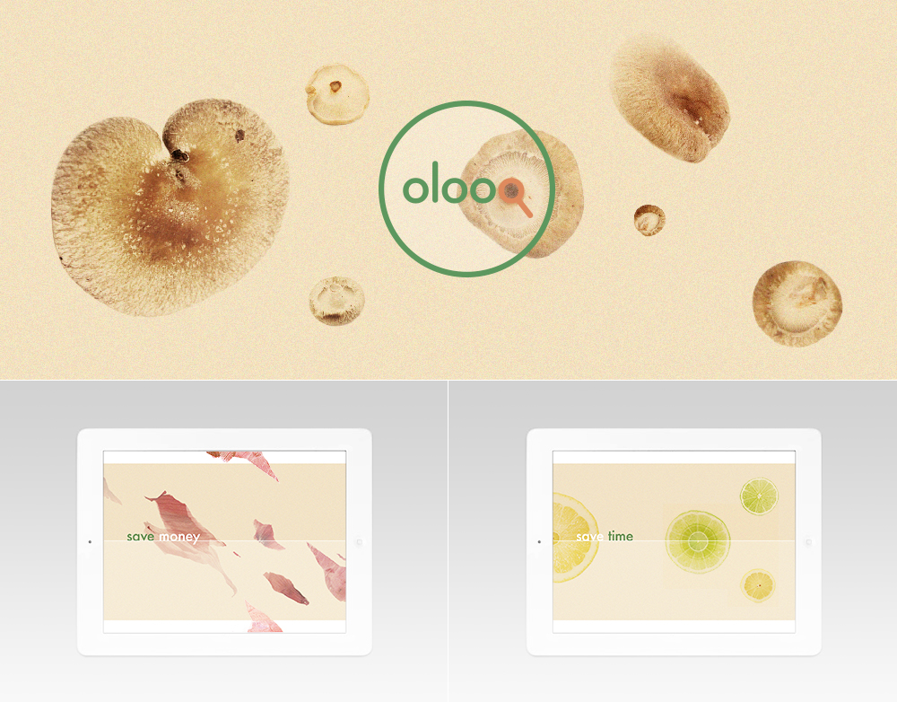
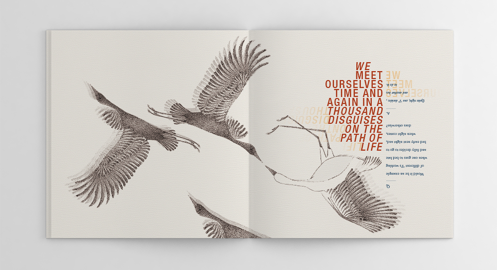
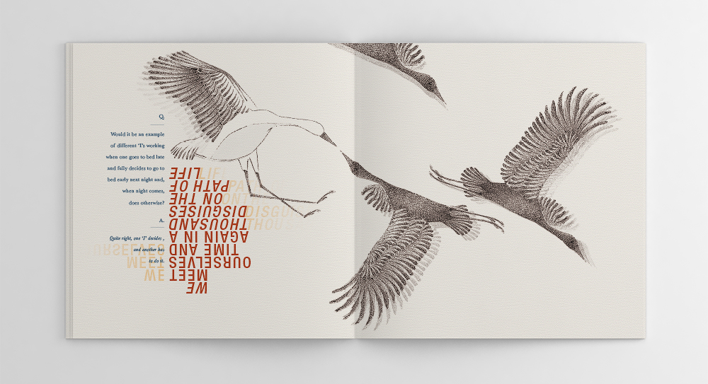
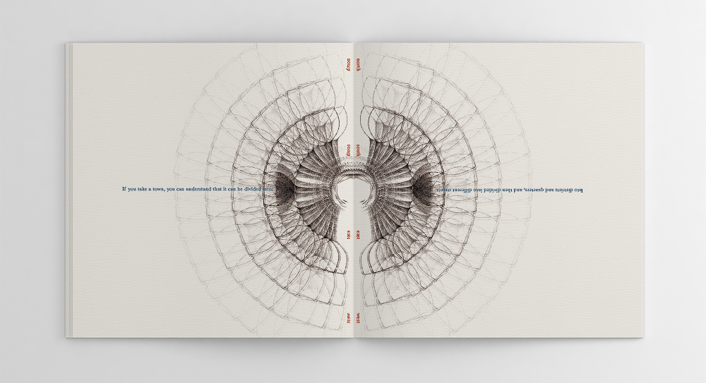
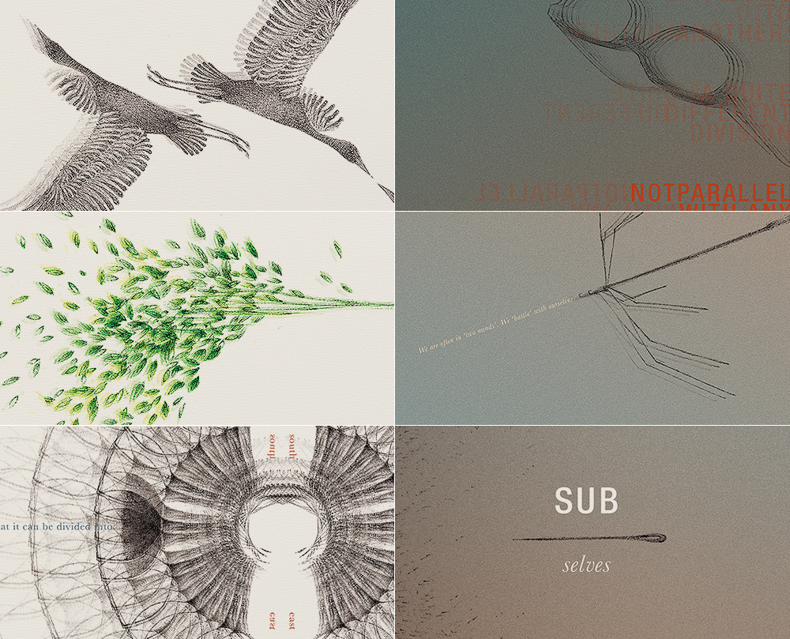

Illustration: Various Works
Drawing | Digital Manipulation
Background spreads for OLOOQ -- a search engine and price comparison site for organic produce and goods. The rawness of organic produce is combined with clean elements, to present OLOOQ as both fresh and modern, yet authentically natural.
   Illustrations for 'Subselves' book. Please Note: this book can be read from different orientations to illustrate the voices and perspectives of different selves or authors.
The 'Subselves' book conceptually visualises the existence of multiple 'I's', perspectives and personalities in individuals, both conscious or unconscious. It draws on the voice of four different authors who have written about the subject. To reflect multiple selves, I chose to illustrate contrasting states or moods; e.g. glass half-full and empty. At times, illustrations and typography come to be duplicated repeatedly to create subtle shadows, signifying the existence of simultaneous selves. Marked contrasts in the dialogues of different authors are achieved by shifting typographical orientation. Jung for instance, can be read right-side up, whilst Ouspensky, upside down. The reader is free to read the book in whichever orientation they wish. In this sense, the reading experience is purposefully disjointed, akin to the disjointed, conflicted and contradictory nature of our own 'subselves' within.